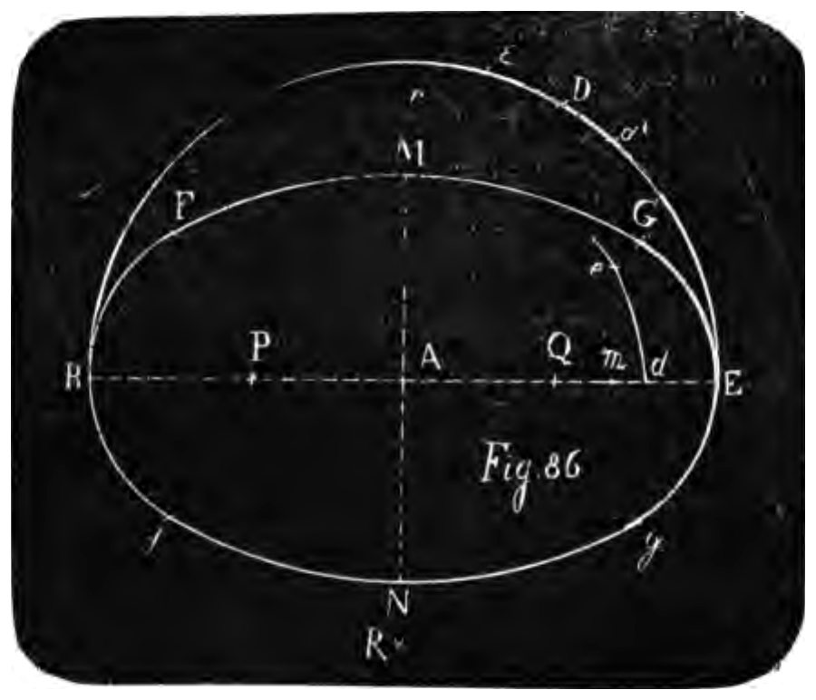
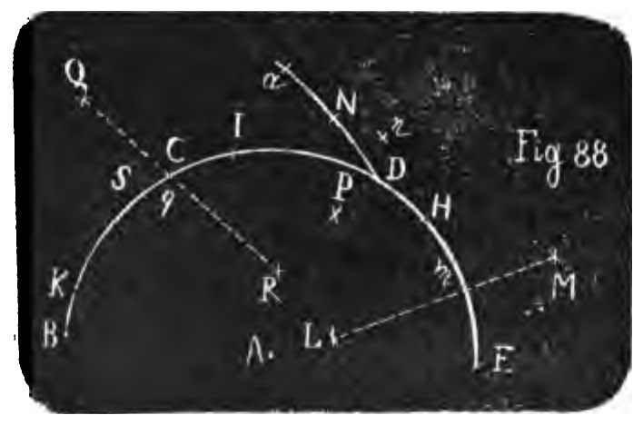

§§ 170–179: Four-Center Ovals, Tangents & Architectural Arches¶
170. Problem. With center \(A\) (Fig. 84), to describe a circle that touches the four circles last inscribed (§ 169) in a given circle.
Solution. Find a third proportional to the two straight lines \(FP, Fa\) (§ 86). Taking this as radius, and with center \(A\), describe a circle. It will be the required one.
Demonstration. Since \(PF = 1\) and \(Fa = \sqrt{2} - 1\), the third proportional will be
f. 0125 · p. 100equal to \(3 - 2\sqrt{2}\). Now let \(q\) be the point where radius \(Ar\) cuts the circle described with center \(R\). Then \(qr\), the diameter of that circle, will be \(= 2aF = 2\sqrt{2} - 2\); which value subtracted from \(1 = Ar\) will leave \(Aq = 3 - 2\sqrt{2}\) equal to that third proportional. Therefore point \(q\) will lie on both circumferences; and lying on straight line \(AR\), the perpendicular to this line at \(q\) will be tangent to both circles, which will touch at \(q\) (III.13 and 16). The same is proved for the others.
171. Problem. To find a circular arc whose cosine equals its chord (Fig. 85).
Solution. With radius \(AB\) supposed \(= 1\), describe arc \(BCDE\), and make \(AB = BC = CD = DE = DP = CP\). Then make \(BD = Ba = Ea\), and \(Aa = BF\). With radius \(PF\) and center \(B\), mark an arc cutting arc \(BC\) at \(Q\). Arc \(BQ\) will be the one required.
Demonstration. Points \(A, F, a, P\) lie on the same straight line (§ 13). Moreover, points \(B, A, D, P\), being at distance \(CB\) from point \(C\), lie on the circumference of a circle described with center \(C\) and radius \(CB\). Since \(CB = BA = AD = DP\), \(BCP\) will be a diameter of this circle (VI.15) and \(PA = \sqrt{3}\) (§ 2). Hence \(PF = \sqrt{3} - 1 = BQ\). If we now drop \(QR\) perpendicular onto \(AB\), we shall have \((BQ)^2 = (AB)^2 + (AQ)^2 - 2AB \cdot AR\) (II.13); that is, \((\sqrt{3} - 1)^2 = 4 - 2\sqrt{3} = 2 - 2AR\), and therefore \(AR = \sqrt{3} - 1 = BQ\), as was proposed to be done.
These last Problems are from Ozanam, solved by him with ruler and compass.
172. Problem. Given the axes \(BE, MN\) (Fig. 86) of an ellipse, to describe around them an oval composed of four circular arcs tangent to one another.
Solution. With center \(A\), where the axes intersect, and with radius \(AB\), which is the semi-major axis, describe the
f. 0126 · p. 101semicircle \(BDE\), and make \(EA = ED\). With center \(B\) and radius \(BD\), cut axis \(BA\) at \(d\). With center \(A\) and radius \(AM\), cut semi-axis \(AE\) at \(m\). With the same center \(A\) and radius \(Ad\), describe arc \(de\), and make \(Em = de\). With an arbitrary radius and centers \(d\) and \(e\), cut arc \(BDE\) at \(\delta\) and \(\varepsilon\). With radius \(\delta\varepsilon\) and center \(A\), cut axis \(BE\) at \(P\) and \(Q\). With centers \(P\) and \(Q\) and radius \(PB = QE\), describe arcs \(FBf, GEg\), and make \(PB = BF = Bf = EG = Eg\). Next make \(PQ = PR = Pr = QR = Qr\). Then with center \(R\) and radius \(RF\), describe arc \(FG\), which will pass through \(M\). With the same radius \(RF = rf\) and center \(r\), describe arc \(fg\), which will pass through \(N\), and what was desired will be done.


Demonstration. Since triangles \(BFP, PQR\) are equilateral, angles \(BPF, QPR\) are equal (I.8); hence the two lines \(FP, PR\) will form a single straight line, because the two angles \(FPA + APR\) equal the two \(FPA + FPB\) (I.13 and 14). Therefore the two arcs \(BF, FG\) will touch one another at \(F\) (III.13). The same contact is proved at points \(f, G, g\). Now if we suppose for brevity \(AB = 1\), we have \(BD = \sqrt{3}\) (§ 2) \(= Bd\); hence \(Ad = \sqrt{3} - 1\). Since \(Ad : de :: A\delta : \delta\varepsilon\) (§ 93), multiplying both terms of the first ratio by \(\sqrt{3} + 1\) (V.4) gives \(Ad(\sqrt{3} + 1) : de(\sqrt{3} + 1) :: A\delta : \delta\varepsilon\), and substituting the numerical values of \(Ad\) and \(A\delta\), and carrying out the multiplication in the first term, we obtain \(2 : de(\sqrt{3} + 1) :: 1 : \delta\varepsilon\). Hence \(2\delta\varepsilon = 2AP = de(\sqrt{3} + 1) = PQ = PR\). Since \(PRQr\) is a rhombus, we shall have
f. 0127 · p. 102(§ 139) \((Rr)^2 = 4(PR)^2 - (PQ)^2 = 3(PR)^2\). Hence \(Rr = PR \cdot \sqrt{3} = de(3 + \sqrt{3})\), and \(RA = \frac{1}{2}de(3 + \sqrt{3})\). Also \(AM = Am = AE - Em = AE - de = 1 - de\). Hence \(RA + AM = 1 + \frac{1}{2}de(1 + \sqrt{3})\), that is, \(RM = 1 + \frac{1}{2}PR\). Since \(PF = PB = 1 - AP = 1 - \frac{1}{2}PR\), we get \(PF + PR = 1 + \frac{1}{2}PR\), i.e. \(FR = RM\). Thus arc \(FG\) passes through \(M\), and likewise arc \(fg\) passes through \(N\). Q.E.D.
173. Problem. To describe (Fig. 87) a spiral \(BLEMFNGPH\) composed of several circular arcs.
Solution. Let \(BE = BF\) be the distance we wish to give to the revolutions of this spiral. Having bisected \(BE\) at \(A\) (§ 66), with center \(A\) and radius \(AB\), describe the semicircle \(BLE\) (§ 64). With center \(B\) and radius \(BE\), describe semicircle \(EMF\). Again with center \(A\) and radius \(AF\), describe semicircle \(FNG\). Again with center \(B\) and radius \(BG\), describe semicircle \(GPH\). In the same manner this spiral could be continued indefinitely.
In the same way this spiral can be doubled if, taking point \(b\) at any desired distance from \(B\) on \(AB\) (§ 73), with centers \(A\) and \(b\) alternately we describe semicircles \(ble, emf, fng, gph\), etc.
This Problem needs no demonstration.
174. Problem. To find \(\sqrt{\sqrt{2}}\) and \(\sqrt{\sqrt{3}}\).
Solution. With radius \(AB = 1\) and center \(A\) (Fig. 88), describe semicircle \(BCDE\), making \(AB = BC = CD = DE\). Then make \(BD = Ba = Ea\); next \(Aa = BP\) and \(AB = EP\). On the semicircle mark points \(H, I, K\), making \(AB = aH = HI = IK\).
f. 0128 · p. 103With radius \(AP\) and centers \(E\) and \(H\), mark two arcs intersecting at \(L\) and \(M\). Then \(LM = \sqrt{\sqrt{2}}\).
With radius \(AB\) and centers \(a\) and \(K\), mark two arcs intersecting at \(Q\) and \(R\). Then \(QR = \sqrt{\sqrt{3}}\).


Demonstration. Since \(ELHM\) is a rhombus, we have (§ 139) \((LM)^2 = 4(LH)^2 - (HE)^2 = 4(AP)^2 - (HE)^2\); but \((AP)^2 = \frac{1}{2}\) (§ 104) and \((HE)^2 = 2 - \sqrt{2}\) (§§ 30 and 36). Hence \((LM)^2 = \sqrt{2}\), and \(LM = \sqrt{\sqrt{2}}\).
Likewise \(aQKR\) is a rhombus, so \((QR)^2 = 4(aQ)^2 - (aK)^2\), with \((aQ)^2 = (AB)^2 = 1\) and \((aK)^2 = 4 - \sqrt{3}\) (§ 161); hence \((QR)^2 = \sqrt{3}\) and \(QR = \sqrt{\sqrt{3}}\).
175. With similar devices one could find the fourth roots of the other whole numbers without using the method of finding mean proportionals (§ 99). By that method, to obtain \(\sqrt{\sqrt{2}}\), one would have had to find a mean proportional between \(1\) and \(\sqrt{2}\), or between \(\frac{1}{2}\) and \(2\sqrt{2}\), or between two other quantities whose product gave \(\sqrt{2}\). Yet its path would be far more complicated. If this Geometry of the Compass is cultivated, very useful fruits will come of it. I have prepared further researches upon this subject, which may find place in a larger Work than this. Here is a use of the preceding Problem with respect to the regular tetrahedral pyramid.
176. Problem. Given the edge \(AB\) (Fig. 89) of a regular tetrahedral pyramid \(SABC\), to find: \(1^\circ\) its altitude; \(2^\circ\) the side of a square equal to its surface; \(3^\circ\) the side of a square upon which, constructing a pyramid whose altitude is the edge of the proposed one, it equals it in volume; \(4^\circ\) the side of a square upon which, constructing a pyramid of altitude equal to the proposed one, it also equals it in volume; \(5^\circ\) the radius of a circumscribed sphere.
Solution. Having constructed Fig. 88 with radius \(AB\) as in Problem
f. 0129 · p. 104§ 174, with center \(B\) and radius \(Ba\), describe arc \(aN\), and make \(Aa = EN\). With radius \(AN\) and centers \(A\) and \(E\), mark two arcs intersecting at \(n\). With the same radius \(nA\) and center \(n\), cut semicircle \(BCDE\) at \(S\). Bisect \(LM\) at \(m\) (§ 66), and likewise \(QR\) at \(q\). There will be:
\(1^\circ\) \(BS\) the altitude of the pyramid.
\(2^\circ\) \(QR\) the side of the square equal to its surface.
\(3^\circ\) \(Mm\) the side of the square base of a pyramid of altitude equal to the edge of the proposed one, and equal to it in volume.
\(4^\circ\) \(Qq\) the side of the square base of a pyramid of altitude and volume equal to the proposed one.
\(5^\circ\) \(AN\) the diameter of a circumscribed sphere.
Demonstration. If from the vertex \(S\) of the pyramid a perpendicular \(Sm\) is dropped onto edge \(AB\), since triangle \(SAB\) is equilateral it will bisect \(AB\) at \(m\) (I.12). If then in base \(ABC\) the perpendicular \(mT\) is raised to \(AB\) from \(m\), it will pass through \(C\) (I.11), and point \(T\), where the perpendicular from \(S\) falls onto the base, will lie upon it (XI.11). Likewise it is proved that point \(T\) lies on line \(Bn\), which bisects side \(AC\). Draw \(mn\); it will be parallel to \(BC\) (VI.2), and triangle \(Amn\) will be equiangular to triangle \(ABC\) (I.27), and \(BC\) double \(mn\) (VI.4). Triangles \(BCT, mnT\) will also be equiangular to one another (I.15 and 27), and \(BC : mn :: CT : mT\) (VI.4). Thus \(CT\) is double \(mT\); hence \(mT = \frac{1}{3}Cm\). Now setting \(AB = 1\), we have \(Cm = Sm = \frac{1}{2}\sqrt{3}\) (§ 104). Thus \(Tm = \frac{1}{6}\sqrt{3}\). Since \((Sm)^2 = (mT)^2 + (ST)^2\) (I.47), i.e., \(\frac{3}{4} = \frac{1}{12} + (ST)^2\), we obtain \((ST)^2 = \frac{8}{12} = \frac{2}{3}\), and hence \(ST = \sqrt{\frac{2}{3}}\). Also (Fig. 88) \(AN = \frac{1}{2}\sqrt{6}\) (§ 104) \(= \sqrt{\frac{6}{4}} = \sqrt{\frac{3}{2}} = An\), and \(An : AS :: AS : SB\) (§ 86), i.e., \(\sqrt{\frac{3}{2}} : 1 :: 1 : SB\); thus \(SB = \sqrt{\frac{2}{3}} = ST\) (Fig. 89), which was the first point.
The surface of the tetrahedral pyramid is equal to four times the surface of its base (Fig. 89) \(ABC\), which
f. 0130 · p. 105being equal to \(\frac{1}{2}AB \cdot Cm = \frac{1}{4}\sqrt{3}\) (I.41), the surface of the pyramid will be \(= \sqrt{3}\). Hence the side of the square equal to it \(= \sqrt{\sqrt{3}}\). But in Fig. 88, \(QR = \sqrt{\sqrt{3}}\) (§ 174), so \(QR\) is the required side, which was the second point.
Since in equal pyramids the bases and altitudes are reciprocally proportional to one another (XII.9), we shall have \(1 : \sqrt{\frac{2}{3}} :: \frac{1}{4}\sqrt{3}\) to the base of the pyramid whose altitude is \(= AB = 1\). Hence the area of this base will be \(= \frac{1}{4}\sqrt{2}\), and the side of the square of this area \(= \frac{1}{2}\sqrt{\sqrt{2}} = Mm\) (§ 174). Which was the third point.
Since pyramids of equal altitude are in the ratio of their bases, the square equal to triangle \(ABC = \frac{1}{4}\sqrt{3}\) will have side \(\frac{1}{2}\sqrt{\sqrt{3}} = Qq\) (§ 173). Which was the fourth point.
Furthermore, the diameter of the sphere circumscribed about the tetrahedral pyramid is sesquialter in power of the side of the pyramid (XIII.13), i.e., \(= \sqrt{\frac{3}{2}}\), which is therefore \(= AN\). Which was the fifth point.
177. Problem. Given the altitude \(ST\) of a regular tetrahedral pyramid (Figs. 88 and 89), to find its edge \(AB\).
Solution. With a radius \(AB\) (Fig. 88) equal to \(ST\) (Fig. 89), describe semicircle \(BCDE\) making \(AB = BC = CD = DE\). With center \(B\) and radius \(BD\), describe arc \(DNa\), and with the same radius and center \(E\), cut it at \(a\). With radius \(Aa\) and the same center \(E\), cut it at \(N\). Then \(AN\) will be the required edge equal to edge \(AB\) of Fig. 89.
Demonstration. In Fig. 88 we have \(AB : AN :: 1 : \sqrt{\frac{3}{2}}\) (§ 176), and since \(1 : \sqrt{\frac{3}{2}} :: \sqrt{\frac{2}{3}} : 1\), as proved by equality of product of extremes and means, \(AB\) is to \(AN\) as \(\sqrt{\frac{2}{3}}\) to \(1\), the ratio of altitude to edge (§ 176). Q.E.D.
178. Problem. To divide (Fig. 90) \(AB = 1\) into five equal parts even in the case where a quintuple of \(AB\) cannot be had, as in § 69.
Solution. With radius \(AB\) and center \(A\), having described circle \(BDp\), and made \(AB = BC = CD = DE\) on its circumference, and then \(BD = Ba = B\alpha = Ea = E\alpha\), with radius \(AB\) and center \(\alpha\), cut the circumference at \(g\), and with the same radius and center \(g\), describe arc \(An\alpha\). Now with radius \(BE\) and center \(a\), cut this arc at \(n\). With radius \(\alpha n\) and center \(B\), cut the
f. 0131 · p. 106circumference at \(P\) and \(p\). With the same radius \(pB\) and centers \(p\) and \(P\), mark two arcs intersecting at \(Q\). Then \(AQ\) will be a fifth part of \(AB\) laid along its direction.
Demonstration. If a point \(u\) is supposed on the direction of \(AE\), with \(Au = Aa\), then by right angles \(aAu, \alpha Au\), we have \((au)^2 = 2(aA)^2 = 2(\alpha A)^2 = (\alpha u)^2 = 4 = (BE)^2\); hence \(au = \alpha u = BE = an\). Since angles \(gAB, gA\alpha\) are equal, both half-right (§ 30), angles \(gAa, gAu\) are equal, each equal to three half-right angles. Hence in the two triangles \(gAa, gAu\), having an equal angle included between equal sides, the third side \(ga\) will equal the third \(gu\) (I.4); so a circle described with center \(g\) and radius \(ga\) will pass through \(u\) and be concentric to circle \(An\alpha\). Moreover \(ga = \sqrt{5}\) (§ 104), and since \(an = u\alpha\), we have (§ 93) \(ga : gA :: au : n\alpha\), that is, \(\sqrt{5} : 1 :: 2 : n\alpha\). Therefore \(n\alpha = \frac{2}{\sqrt{5}}\). Hence each side of rhombus \(PBpQ\) is also \(= n\alpha = \frac{2}{\sqrt{5}}\). Thus comparing points \(P, B, p, Q, A\) of this Fig. 90 with points \(A, p, B, P, Q\) of Fig. 3, we have for Fig. 90 \(BQ \cdot BA = (BP)^2\) (§ 19), i.e. \(BQ = \frac{4}{5}\). Hence \(AQ\), which lies in the same straight line (§ 13), \(= \frac{1}{5}\).
179. This Problem, which has a fairly simple solution, could not be omitted on account of decimal division, which is carried out by dividing into two and then into five, or vice versa. It also serves for the following